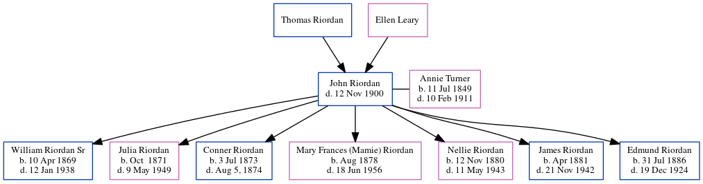

John Riordan c1840 - 1900
[ Home ] | [ Calendar ] | [ Surnames Index ] | [ Family History ]A prominent cotton buyer/brpler and owned a cotton wharehouse and the child of Thomas Riordan and Ellen Leary, John Riordan, the great-great-grandfather of Michele Copp (née Phillips), was born in County Cork, Ireland1,2,3,4,5,6, was baptized in Cork, Ireland on Jun 29, 1840 and married Annie Turner (with whom he had 7 children: William Joseph Sr, Julia Teresa, Conner, Mary Frances (Mamie), Nellie C, James A and Edmund Owen) in Queenstown, Cobh, Cork Ireland in Jan 1866 (Her obituary says she immigrated in 1866 at age 17. It doesn't say she was married).
During his life, he was living in Atlanta, Fulton, Georgia, USA in 18801; and in Atlanta Ward 4, Fulton, Georgia in 19002. He arrived in 1866.
He died on Nov 12, 1900 in Atlanta, DeKalb County, Georgia3,6,7 (60 S. Jackson. Died of Pneumonia) and was buried in Atlanta, Fulton County, Georgia after Nov 12, 19003,6.
Parents
Children
- William Joseph Sr was born on Apr 10, 1869
- Julia Teresa was born in Oct 1871
- Conner was born on Jul 3, 1873
- Mary Frances (Mamie) was born in Aug 1878
- Nellie C was born on Nov 12, 1880
- James A was born in Apr 1881
- Edmund Owen was born on Jul 31, 1886
Citations
- 1880 United States Federal Census Online publication - Provo, UT, USA: The Generations Network, Inc., 2005. 1880 U.S. Census Index provided by The Church of Jesus Christ of Latter-day Saints © Copyright 1999 Intellectual Reserve, Inc. All rights reserved. All use is subject to the limite (Marital Status: Married; Relation to Head: Self)
- 1900 United States Federal Census Online publication - Provo, UT, USA: MyFamily.com, Inc., 2004.Original data - United States of America, Bureau of the Census. Twelfth Census of the United States, 1900. Washington, D.C.: National Archives and Records Administration, 1900. T623, 1854 rolls.
- Atlanta, Georgia, Oakland Cemetery Records, 1773-1999 Ancestry.com Operations Inc
- Ireland, Catholic Parish Registers, 1655-1915 Ancestry.com Operations, Inc.
- Ireland, Crew Lists and Shipping Agreements, 1863-1920 Ancestry.com Operations, Inc. (Records of the Registrar General of Shipping and Seamen, 1860 - 1921. Dublin, Ireland: Microfilm of original records at the National Archives.)
- U.S., Find A Grave Index, 1600s-Current Ancestry.com Operations, Inc.
- Georgia, Wills and Probate Records, 1742-1992 Ancestry.com Operations, Inc.
Family Tree
Generated by ged2site. Last updated on Jun 16, 2024